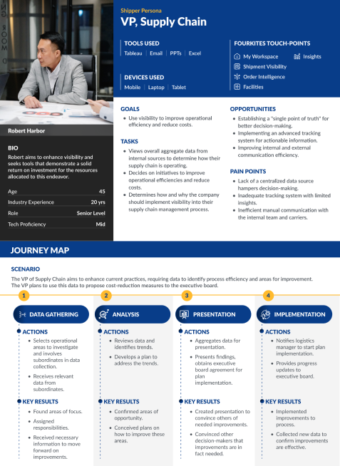
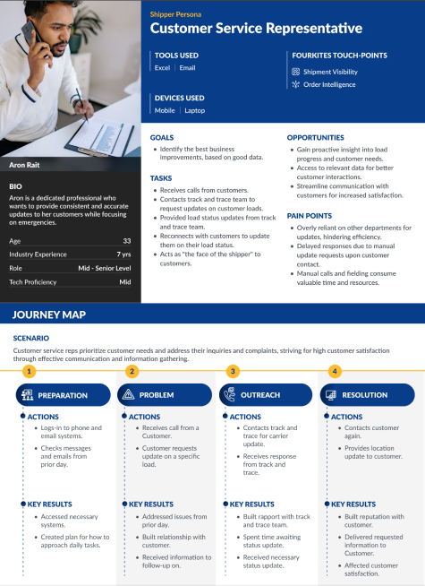

Workspace: An Integrated Customer Ecosystem
Redesigning the executive workspace to drive engagement and upsell opportunities across the FourKites platform.
Design Leadership · Strategy
Context & business challenge
- Leadership identified a cross-sell and upsell gap: multiple product lines, but customers were unaware of their full value.
- CEO raised it as a strategic concern: lack of visibility across offerings limited adoption, engagement, and revenue growth.
- My mandate: design a scalable ecosystem (Workspace) that unifies products, increases daily engagement, and unlocks upsell opportunities.
My role as Director of UX
- Defined the vision: positioned Workspace as the single entry point for our ecosystem, framing it as both a customer success enabler and a growth driver.
- Secured alignment: partnered with CEO, Sales, and Product leadership to ensure the design vision mapped to business KPIs (NPS, engagement, upsell).
- Built & guided the team: directed 2 product designers, collaborated with engineering, data science, and sales to ensure feasibility and adoption.
- Customer voice at the center: established an Executive CAB (VP+ from Frito-Lay, Eastman, TJX, 3M) to co-shape use cases and validate solutions.
Key challenges
- Product silos → Users struggled to discover and use cross-products.
- Low daily engagement → Executives lacked a single control view.
- Sales friction → Upsells were reactive, not built into workflows.
Design strategy
- Atomic design system foundation → ensured scalability and consistency across products.
- Habit-forming design → one-page holistic workspace, driven by internal/external triggers.
- Role-based customization → executives vs. operators with configurable widgets.
- Interoperability → actionable insights across multiple licensed products, not siloed dashboards.
- Brand elevation → bold, unified FourKites visual identity.
Executive alignment & vision setting
- Partnered with CEO and leadership to position Workspace as not just a UX enhancement, but a growth lever for engagement and upsell.
- Defined success metrics upfront: executive adoption, NPS improvement, and revenue impact.
Customer co-creation (E-CAB workshops)
- Established and facilitated an Executive Customer Advisory Board (E-CAB) with VP+ stakeholders from Fortune 500 companies.
- Used workshops to surface pain points, co-ideate use cases, and validate that our vision solved real executive workflow challenges.
Cross-functional orchestration
- Directed a multi-disciplinary team (design, product, engineering, data science, and sales) ensuring feasibility and alignment with go-to-market strategy.
- Embedded sales and CS teams into design validation cycles, so the outcome doubled as a customer engagement tool and a sales enabler.
Framework for prioritization
- Introduced a risk–effort–value model to prioritize features, balancing business impact with user adoption potential.
- Framed design trade-offs in terms leadership could act on—ensuring roadmap readiness.
Scalable design execution
- Leveraged our design system to ensure scalability across multiple product lines.
- Focused on habit-forming design patterns and role-based customization, ensuring both executives and operators had tailored value.
Validation & iteration
- Ran structured pilot testing with strategic accounts.
- Used adoption analytics, sentiment surveys, and NPS tracking to validate engagement and refine the roadmap.
Impact & key outcomes
- Launch Highlight: Workspace unveiled at Visibility Conference (800+ customers) → became the event's standout.
- Engagement: Executive usage increased 18% within 3 months.
- Revenue Impact: 46% increase in upsells, 100+ new product leads generated, first upsell closed within 1 month.
- Customer Experience: Executive NPS grew 32 points.
- Strategic Shift: Positioned FourKites not just as "visibility provider" but as a Control Tower ecosystem player.
Customer testimonials
"My Workspace has truly changed the way we interact with our supply chain data. It's become a daily habit to check the one-page holistic view, which allows us to quickly take action and manage disruptions effectively. This tool has saved us a tremendous amount of time and has given us better control over our supply chain operations."
— Mari Roberts, VP of Transportation, Frito-Lay
"The flexibility to customize the dashboard based on our personas is fantastic. As an executive, I can arrange widgets to get a quick overview of key metrics, while our operational team can set up their workspace to focus on day-to-day tasks. This personalization has enhanced our team's productivity and satisfaction."
— Joe Garvin, Director of Global Logistics, 3M Company
"The centralised landing page have all relevant information in one place means we no longer waste time searching across different platforms. The ease of access has significantly improved our user experience, and making our operations smoother and more reliable."
— Tom Morton, VP of Global Supply Chain & Quality, Eastman Chemical Company
"Having all of FourKite's offerings consolidated into a single location is a game-changer. It allows us to make well-informed decisions about which products and services to utilize. This integration opened up new opportunities for us to scale and expand our operations."
— Raina Avalon, Chief Logistics Officer, TJX
Press release
Design artifacts & execution
Strategic user segments


Information architecture

Before & After


Final outcome